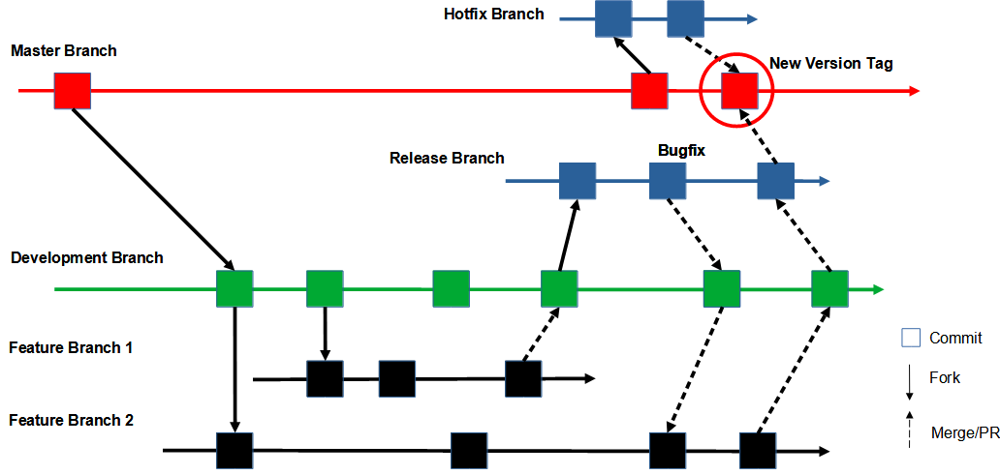

SWQAP (Software Quality Assurance Plan)
Revision History
| Rev. |
Date |
Name |
Section |
Description of Change |
| 00.01 |
6/30/2023 |
Attila Balint |
all |
initial revision |
1 Introduction
1.1 Purpose
The purpose of this document is to describe the quality assurance activities and procedures that will be performed for a software project. This document helps to ensure that the software products or services meet the expected quality standards and requirements, and that the software development process is consistent and repeatable. This document also helps to communicate the quality objectives and expectations to the software project team, the software provider, and the software customers or users.
1.2 Scope
The scope of this document is to define the boundaries and limitations of the quality assurance activities and procedures that will be performed for a software project. The scope may include:
- The software products or services that are subject to quality assurance
- The software development phases or stages that are covered by quality assurance
- The software development methodologies or approaches that are used for quality assurance
- The software development tools or technologies that are used for quality assurance
- The software project team members or roles that are involved in quality assurance
- The software project stakeholders or parties that are affected by quality assurance
- The software project assumptions or constraints that are relevant to quality assurance
1.3 Objectives
The objectives of this document are to:
- Define the quality standards and models that will be followed and applied in the software project
- Describe the quality assurance activities and procedures that will be performed throughout the software development life cycle
- Identify the quality assurance deliverables and documents that will be produced and maintained in the software project
- Assess the quality risks and issues that may affect the software project
- Provide a quality assurance schedule that outlines the time frames and milestones for each quality assurance activity and procedure
- Provide a list of references and appendices that support this document
1.4 Validity
The validity of this document is the period of time during which this document is applicable and effective for a software project. The validity may depend on:
- The software project duration or schedule
- The software project changes or revisions
- The software project completion or termination
- The software project review or approval
The validity should be clearly stated in this document, along with the conditions or criteria for updating or revising this document in case of any changes or deviations in the software project.
1.5 Update Scheme
The update scheme of this document is the process and procedure for modifying or amending this document in case of any changes or deviations in the software project. The update scheme may include:
- The triggers or events that require an update or revision of the SWQAP document
- The roles or responsibilities of the software project team members or stakeholders for initiating, reviewing, approving, and implementing the update or revision of the SWQAP document
- The tools or techniques for tracking, recording, and communicating the update or revision of the SWQAP document
- The frequency or intervals for updating or revising the SWQAP document
- The version control or configuration management of the SWQAP document
The update scheme should be clearly stated in this document, along with the guidelines or standards for ensuring the consistency and accuracy.
2 Referenced Documents
3 Definitions
3.1 Terms
Docker: ToDo
3.2 Abbreviations
SIT: System Integration Testing
4 Software Development Processes
4.1 Version Control System
Git as a version control system is a software tool that helps to track and manage changes to the software code, documents, and other artifacts in a software project. It helps to ensure the quality, consistency, and reliability of the software products or services, by enabling different types of testing, reviewing, and deploying on different versions or branches of the software code. It also helps to communicate the changes, updates, and statuses of the software code to the software project team, the software provider, and the software customers or users.

Gitflow defines the following types of branches:
- 1 A Development Branch is forked from Master Branch
- 2 A Release Branch is forked from Development Branch
- 3 Feature branches are forked from Development Branch
- 4 When a feature is complete, it is merged into the Development Branch
- 5 When the Release Branch is done, it is merged into Master Branch (and Development Branch)
- 6 If an issue in Master Branch is detected, a Hotfix Branch is forked from Master Branch
- 7 Once the hotfix is complete, it is merged to both Master Branch and Development Branch
- 8 Master Branch should be tagged with a version number
The Master Branch stores the releases, and the Development Branch serves as an integration branch for features. Each new feature should reside in its own branch. Features, bug fixes and documentations go in Release Branch. Hotfix Branches are used to quickly patch releases.
4.2 Branching Strategy
A branching strategy is a set of rules and guidelines that define how branches are created, named, managed, merged, deleted, and documented in a software project. A branching strategy helps to organize and coordinate the work of multiple developers or teams on a shared codebase, using a version control system. It also helps to ensure the quality, stability, and security of the software product or service, by enabling different types of testing, reviewing, and deploying on different branches.
Elements of the branching strategy are:
- Branching model is Git/GitLab Flow.
- Branch naming conventions are features/feature-name for feature branching, bugfixes/description for bug and hot fixes, users/username/description for developer specific branches.
- Branch merging rule is merge requests/pull requests with code reviews and approvals.
- Branch lifecycle management practices are creating branches from the master branch, updating branches regularly with the latest changes from the master branch, deleting branches after merging them to the master branch, keeping branches short-lived and focused on a single feature or bug fix.
4.3 Version Tagging
Version Tagging is a process of labeling or marking a specific version of the software code, documents, and other artifacts in a software project as stable, reliable, and ready for production. It helps to identify and access the stable versions easily and quickly, without having to remember the exact revision number or date. It also helps to communicate the release status and history of the software products or services to the software project team, the software provider, and the software customers or users.
Semantic Versioning:
- A version number is MAJOR.MINOR.PATCH
- The MAJOR part is incremented when there are incompatible or breaking changes in the software code, such as changing the interface or removing a feature
- The MINOR part is incremented when there are new features or enhancements in the software code that are backward compatible, such as adding a new function or improving performance
- The PATCH part is incremented when there are bug fixes or corrections in the software code that are backward compatible, such as fixing an error or resolving an issue
- Examples: v1.2.1, v2.0.0-beta.1, v2.0.0-rc.1
If the project is still in the initial development phase, meaning that it has a rapidly changing and unstable code, then the first tag version number should be 0.1.0. This indicates that any subsequent changes may not be backward compatible. The MAJOR part should remain at 0 until the project reaches a stable state and becomes 1.0.0.
4.4 Code Review Process
Code Review Process is a process of systematically examining and evaluating the software code, documents, and other artifacts in a software project by one or more peers before they are merged and shipped. It helps to ensure or improve the quality, consistency, and reliability of the software products or services, by identifying and fixing bugs, errors, vulnerabilities, or other issues. It also helps to share knowledge, skills, and best practices among the software project team members and stakeholders.
4.5 Testing Process
ToDo
4.6 Deployment Process
General requirements:
- The source code and parameter files shall allow the system to be rebuilt and run error-free on any docker container-based environment, as well as setting up the persistence environment from scratch (using migration database scripts)
DEV (10.10.70.2) deployment requirements:
- The deployment shall be Softwave's responsibility
- The Release Branch shall be used for deployment
- The Feature Branch for DEV testing shall be merged into the Release Branch
- The Release Branch shall be tagged using installation versioning (date-username)
- The issue IDs shall be included in the Git commit
- The Release Branch for SIT testing shall be merged into the Master Branch
- The Master Branch shall be tagged using semantic versioning (major.minor.patch)
SIT (10.10.70.4) deployment requirements:
- The deployment shall be Innopay's responsibility
- The version tag shall be used for deployment
- SIT shall use docker compose (or Kubernetes/Helm later) to run containers
- Containers shall be built on local machines (or Gitlab CI/CD later)
- Environment variables (or parameter files later) shall be used to configure the containers (e.g. database credentials)
4 Tools
ToDO
4 Roles
ToDO
4 Responsibilities
ToDO
4 Deliverables
ToDO
4 Risks
ToDO
4 Metrics
ToDO
commitba be kell kerüljenek a ticket számok is.